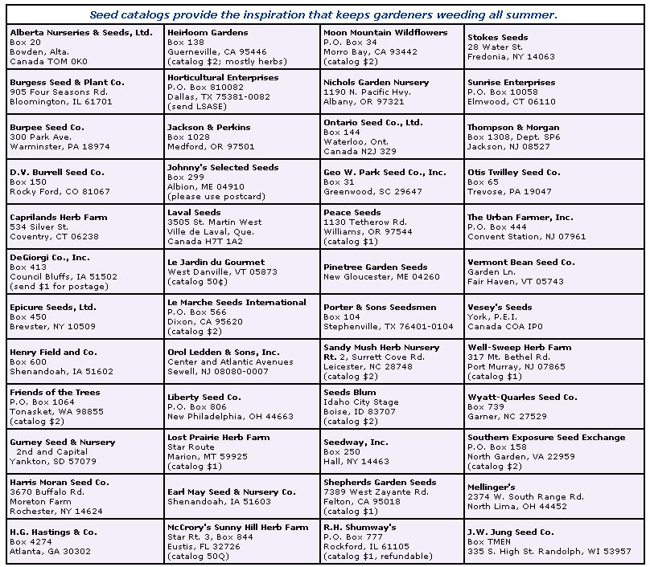

A packet of seed today. . . a bountiful harvest tomorrow.
About the only way most ardent gardeners manage to get through the winter months-when most of last year's carefully tended beds are buried in snow or mired in mud-is by curling up with a bunch of seed catalogs and dreaming about the coming spring's bigger and better gardens. The whole family gathers around the supper table and oohs and ahhs over the glossy pictures of early carrots dug young and sweet, and shining greens fairly singing with life.
The backyard grower, thank goodness, can raise tomatoes that practically ooze with flavor . . . melons perfectly suited to an area's climatic quirks . . . succulent foods that don't even exist in supermarkets . . . and even such exotics as red carrots and blue potatoes! And, surely, half the pleasure provided by such flavor-packed, site-specific, and unusual varieties is the self-satisfaction that comes with discovering them.
So, to ease your pregarden doldrums, we've prepared a list of the major seed companies that supply catalogs. Then, for good measure, we've added the names of some less well known companies. Write to any of the firms in the list below (don't forget to add the charge for postage if one is indicated), and you'll receive a veritable book of dreams.
Then, once you've finished going through your catalog collection and laying out the umpteenth possible plan for your 1987 garden, it'll be nigh onto planting time!
|
|
 |
|